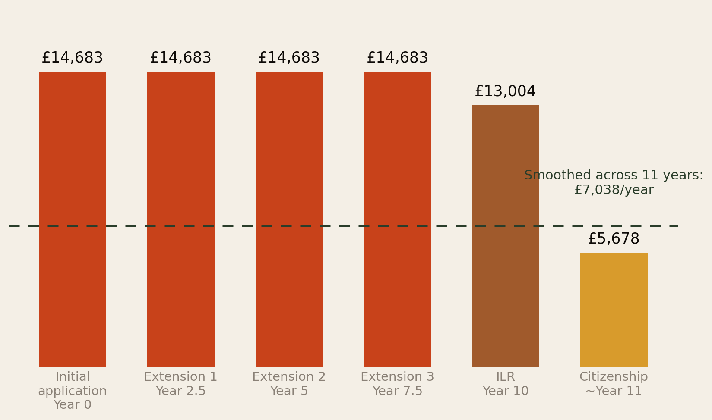
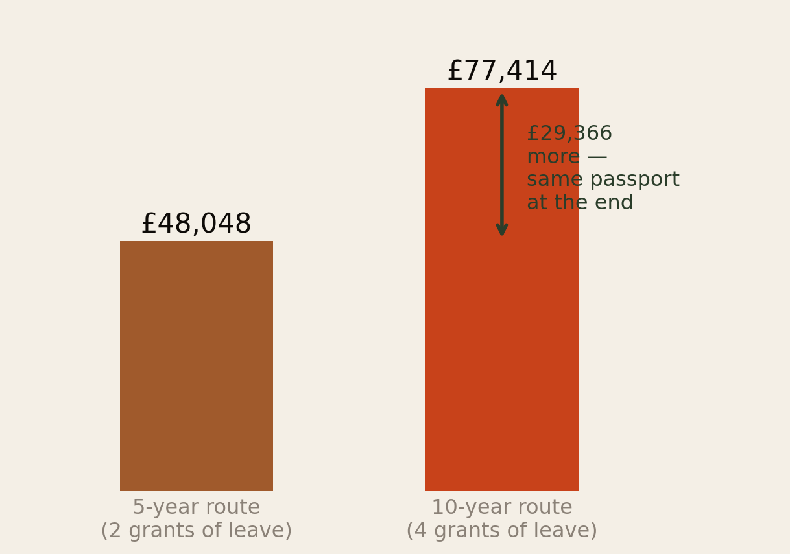
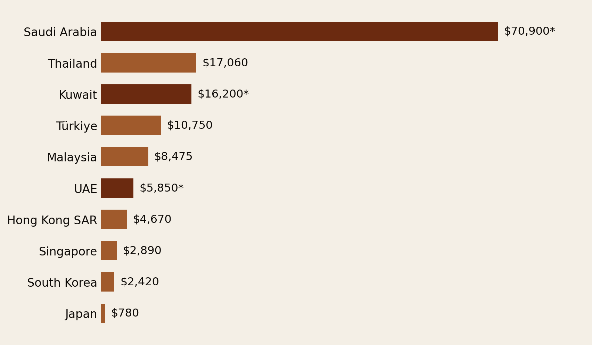
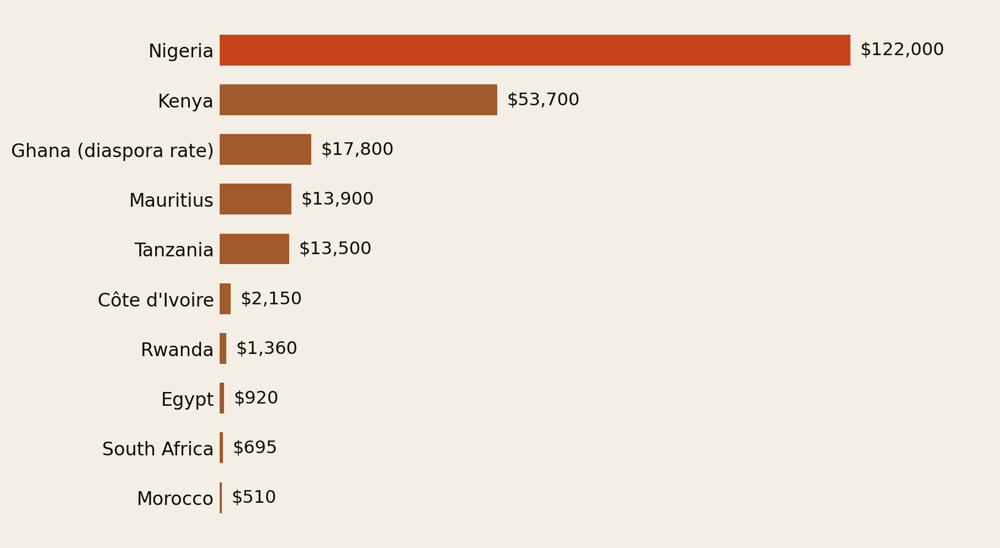
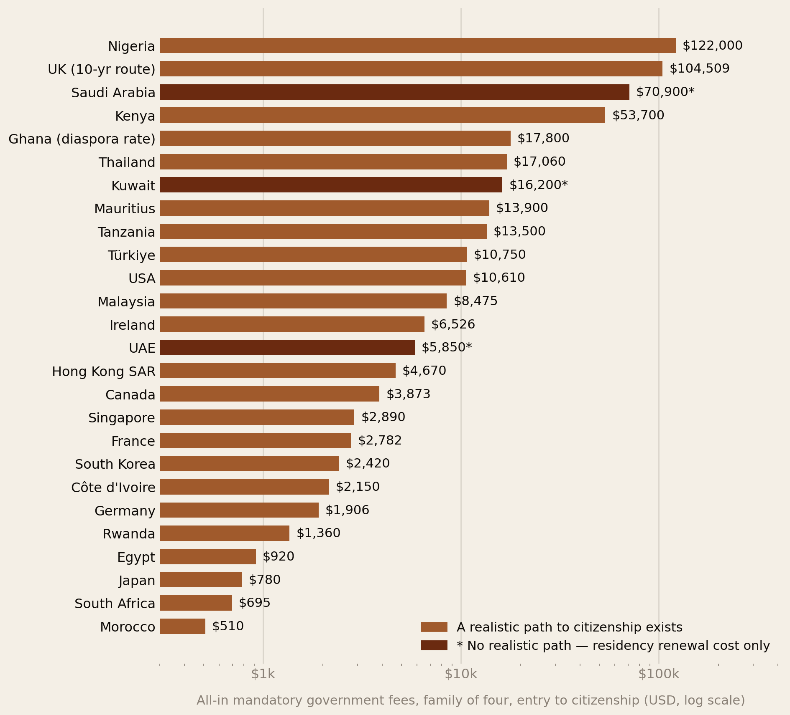
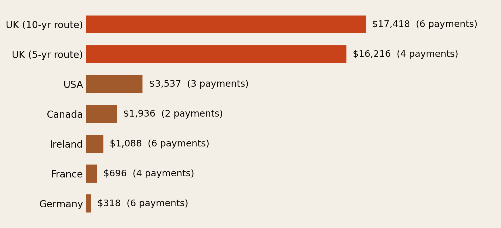

The Visa Treadmill — What It Costs to Stay Legal.
A family of four on the UK’s 10-year route pays £77,414 in Home Office fees before anyone holds a passport — and it does not arrive as a monthly bill. It arrives as six sudden five-figure demands. Every number here comes from a published government fee schedule.
Section 01The Number to Pin
A family of four working through the UK’s 10-year family and private life route to British citizenship — two adults, two children, starting from an initial 30-month grant and renewing every 2.5 years until settlement, then naturalising — faces a total Home Office bill of £77,414 across the full 11-year journey, using fees published on GOV.UK under the 8 April 2026 schedule.
That figure covers government fees only: application charges, the Immigration Health Surcharge (IHS), Indefinite Leave to Remain (ILR), and naturalisation. It excludes legal fees, translation costs, the Life in the UK test resit costs, English-language certification, and priority-service upgrades — all of which push the real-world total meaningfully higher.
Every fee cited below is a published government rate. The build is fully auditable — and it runs for 25 other countries too.
Across all 26 countries in this report, the all-in family-of-four total ranges from roughly $510 (Morocco) to $122,000 (Nigeria), with the UK sitting near the top of that global range at approximately $104,509.
Section 02Why the 10-Year Route, Specifically
Most diaspora families outside the UK’s five-year “straightforward” spousal or work routes end up here by default — not by choice. The 10-year family and private life route exists for people who do not meet the strict financial or English-language thresholds of the 5-year route, or who have had a visa refusal, a relationship breakdown, or a gap in lawful residence.
Instead of two 30-month grants totalling 5 years, applicants are placed on repeat 30-month grants for a full decade before they can even apply for ILR. That means four separate fee-paying events before settlement, then a fifth (ILR) and a sixth (naturalisation) — each one a full-price, non-refundable government transaction.
This structural detail is the whole story. The 10-year route isn’t merely slower in years — it doubles the number of times a family must pay Home Office fees and surcharges, while offering no fee discount for repeat applicants. Section 05 puts a precise number on that penalty.
Section 03The Fee Build, Step by Step
Step 1 — Initial application (2 adults + 2 children, 30 months)
| Item | Rate (per person) | Family of 4 |
|---|---|---|
| Leave to remain — family/private life application fee | £1,407 | £5,628 |
| Immigration Health Surcharge — adults, £1,035/yr × 2.5 yrs | £2,587.50 | £5,175 |
| Immigration Health Surcharge — children, £776/yr × 2.5 yrs | £1,940 | £3,880 |
| Subtotal, initial application | £14,683 |
The IHS annual rates (£1,035 standard, £776 reduced for under-18s and students) come directly from the Home Office’s published surcharge guidance, current since February 2024 and left unchanged by the April 2026 fee uplift. Both the application fee and the surcharge are paid in one transaction at the point of submission — there is no monthly or annual instalment option.
Step 2 — Extensions 2, 3 and 4 (every 2.5 years)
Assuming the family composition and fee schedule stay flat — a conservative assumption, since fees have risen almost every year — each of the three remaining 30-month extensions repeats the same £14,683 charge.
Running total after four grants of leave (10 years of temporary status): £58,732.
Step 3 — Indefinite Leave to Remain, year 10
| Item | Rate (per person) | Family of 4 |
|---|---|---|
| ILR application fee (up from £3,029 in April 2026) | £3,226 | £12,904 |
| Life in the UK Test (2 adults only) | £50 | £100 |
| Subtotal, ILR | £13,004 |
ILR applicants are exempt from the IHS — settlement is the one point in the process where that charge disappears. It is the only relief point in an otherwise unbroken run of full-price applications. (The exemption is conditional: if the settlement application fails and limited leave is granted instead, the surcharge becomes payable for that grant.)
Step 4 — Naturalisation and child registration
| Item | Rate | Family of 4 |
|---|---|---|
| Naturalisation, adult: £1,709 + £130 citizenship ceremony | £1,839 | £3,678 |
| Child registration as British citizen (if not automatically British) | £1,000 | £2,000 |
| Subtotal, citizenship stage | £5,678 |
A rare piece of good news: the child registration fee fell in April 2026, from £1,214 to £1,000 — the only line in this entire build that moved in the family’s favour. And children born in the UK after a parent is granted ILR are automatically British and need no registration at all, so a family whose children qualify that way shaves £2,000 off the total.
The full 11-year total
| Stage | Timing | Family-of-4 cost |
|---|---|---|
| Initial application | Year 0 | £14,683 |
| Extension 1 | Year 2.5 | £14,683 |
| Extension 2 | Year 5 | £14,683 |
| Extension 3 | Year 7.5 | £14,683 |
| ILR (settlement) | Year 10 | £13,004 |
| Citizenship | ~Year 11 | £5,678 |
| Grand total | £77,414 |

This excludes legal or immigration adviser fees (commonly £1,500–£4,000 per application if used), English-language testing (£150–£200 per adult), certified translations, biometric enrolment, and optional priority processing (£500–£1,000 per application per person). A family using a solicitor at each of the six fee-paying stages could realistically add another £15,000–£25,000 on top of the £77,414 government baseline.
Section 05The £29,366 Route Penalty
The single most useful comparison in the UK build is not against other countries. It is against the other UK route.
A family on the 5-year route pays for two grants of leave instead of four, then the same ILR and citizenship stages. Using identical fee lines, that comes to £48,048.

The gap is £29,366 — exactly two extra renewal cycles. It is not a penalty for doing anything wrong. It is the price of having failed a financial threshold, had a refusal, or carried a gap in lawful residence at some point in the past. The system charges most to the families with the least margin, which is the closest thing this report has to a thesis.
It also matters for how you read every chart that follows: the UK figure used in the international comparison is the 10-year route. A UK family on the 5-year route sits at roughly $64,900 — still high, still second only to Nigeria, but not the same number.
Section 06Europe & North America
The same “stack every mandatory government fee across the full path to citizenship” methodology applies cleanly to other major destinations, because each publishes exact, verifiable fee schedules.
Ireland
Irish Residence Permit registration/renewal is €300 per adult per year, with under-18s exempt. Naturalisation costs €175 to apply (non-refundable) plus a certification fee on approval of €950 for adults and €200 for minors. There is no health-surcharge equivalent — Ireland concentrates cost in annual renewals rather than an upfront multi-year charge, which materially changes the cash-flow profile even where totals are comparable.
Family of 4 over 5 years to naturalisation: €3,000 (IRP renewals, children exempt) + €2,250 (2 adults) + €400 (2 children) = ≈€5,650 (≈$6,526).
Canada
Following the 30 April 2026 fee increase: economic-class permanent residence processing is CAD 990 for the principal applicant, CAD 990 for an accompanying spouse and CAD 270 per dependent child, plus a Right of Permanent Residence Fee of CAD 600 each for the principal applicant and spouse. Citizenship is CAD 653 per adult (including the CAD 123 right-of-citizenship fee) and CAD 100 per minor.
Family of 4: CAD 3,720 for PR + CAD 1,506 for citizenship + CAD 170 family biometrics = ≈CAD 5,396 (≈$3,873) — dramatically lower than the UK, because Canada charges once for permanent status rather than four times for temporary leave.
Germany
Residence permit issuance €100, renewals roughly €93–96, settlement permit €113, naturalisation €255 per adult and €51 per minor naturalising alongside a parent. Germany’s 2024 citizenship reform also cut the standard residence requirement from 8 years to 5 (3 with strong integration), shortening the treadmill itself and not just the fee stack.
Family of 4 over 5 years: ≈€1,652 (≈$1,906) — the cheapest of the European and North American builds.
France
Under Article 128 of the Loi de finances pour 2026 (Law 2026-103 of 19 February 2026), effective for all decisions from 1 May 2026, France sharply raised its residence-permit and naturalisation duties. A first carte de séjour now costs €350 (€300 tax + €50 stamp, up from €225 combined); renewal €250; and the naturalisation droit de timbre jumped from €55 to €255 — a 364% increase in a single reform.
Family of 4 over roughly 5 years: ≈€2,410 (≈$2,782). Children in France do not generally need their own carte de séjour before 18, which keeps the family multiplier lower than in the UK or US.
United States
The comparable US route is H-1B specialty-occupation status leading to an employer-sponsored green card (I-140/I-485) and then naturalisation (N-400). There is no annual health-surcharge equivalent; health coverage runs through the private insurance market and is not part of the visa-fee treadmill.
- Employer-borne (legally cannot be shifted to the worker): H-1B registration $215; I-129 base $780 for employers with 26+ full-time US staff (or $460 for smaller employers and nonprofits); fraud prevention $500; ACWIA training $750–$1,500 by employer size; asylum program fee up to $600; I-140 $715. ≈$2,940–$4,310 depending on employer size, excluding optional premium processing ($2,965, which can more than double this).
- Family-borne: I-485 adjustment of status $1,440 per adult and $950 per child under 14; N-400 naturalisation $760 per adult (biometrics included). For two adults and two children: $6,300. Children generally acquire citizenship automatically and free of charge under the Child Citizenship Act once a parent naturalises — a structural difference from every other country in this build.
- Combined mandatory government fees: ≈$10,610, of which the family directly pays about 59%.
Two contingent charges are excluded from that total. A $250 “Visa Integrity Fee” was enacted in July 2025 but, as of mid-2026, is still not being collected pending inter-agency implementation. And the $100,000 H-1B payment under Presidential Proclamation 10973 was vacated by the District of Massachusetts in June 2026; on 24 July 2026 the First Circuit denied the government’s motion for a stay, so the fee remains blocked while the appeal proceeds. If it ever takes effect it would eclipse every other line in this report combined.
Section 07Asia’s Top 10 Destinations

The Gulf states — Saudi Arabia, Kuwait and the UAE — sit at or near the top of the Asian cost ranking despite offering no realistic citizenship pathway at all. Families pay Gulf-scale annual residency and dependent fees indefinitely, with naturalisation reserved for exceptional, discretionary cases. That makes them structurally different from every other country here: the treadmill never ends in a finish line.
Japan inverts the usual pattern: naturalisation itself is entirely free, and nearly all of a family’s cost is absorbed earlier, in residence-status maintenance. Malaysia is cheap per transaction but requires 10 of the preceding 12 years of residence before eligibility. Thailand’s cost concentrates in a single 191,400฿ Certificate of Residence.
Section 08Africa’s Top 10 Destinations

Africa produces a roughly 240-fold gap between Nigeria (≈$122,000) and Morocco (≈$510), despite both being top-10 destinations on the continent. The driver is not renewal-cycle count or health surcharges as in the UK, but per-person, per-year work-permit levies with no family discount. Nigeria’s CERPAC alone doubled from $1,000 to $2,000 per person per year, and the Constitution requires 15 years of residence before naturalisation eligibility — so a family of four’s permit costs alone compound into six figures well before any citizenship application is filed.
Kenya sits second after raising the Class D work permit fee to KES 500,000 per year, a 150% increase. Ghana operates an explicitly tiered schedule: ECOWAS citizens pay GHS 15,000, Africans and the diaspora GHS 25,000, and non-Africans the cedi equivalent of US$25,000 — one of the few places on earth where being African is priced into the fee schedule in your favour. The chart uses Ghana’s diaspora rate.
Rwanda sits at the opposite extreme on fees but the opposite extreme on time: the cheapest total in the region pairs with roughly a 15-year path — the joint-longest in this entire dataset. Tanzania is the only country here that requires renunciation of prior nationality.
Section 09All 26 Countries on One Scale

Three patterns stand out.
First, the most expensive totals are not concentrated in any one region. Nigeria, the UK and Saudi Arabia top the list for three structurally different reasons: uncapped per-person annual work-permit levies, a health surcharge billed as a multi-year lump sum, and Gulf-style residency with no citizenship exit at all.
Second, a large cluster sits under $3,000 all-in — Germany, France, Rwanda, Morocco, South Africa, Egypt, Singapore, South Korea, Côte d’Ivoire. A full family’s path to citizenship does not have to cost five or six figures. It is a policy choice, not an inherent cost of processing paperwork.
Third, three of the “cheapest” countries by fee are flagged because the low number is misleading. Saudi Arabia, Kuwait and the UAE sell renewable residency, not a destination.
Section 10What Actually Drives the Bill
It is tempting to say the UK is expensive because it makes families pay so many times. That is only half true — and the other half is more damning.

Ireland and Germany both require six separate government payments on the path to citizenship — the same number as the UK’s 10-year route. Yet Germany’s average payment is $318 and the UK’s is $17,418: a 55-fold difference in the price of the same bureaucratic act.
The number of times you pay is not what makes the UK expensive. It is the number of times you pay multiplied by a per-event price nobody else charges — and most of that price is a healthcare bill in a trench coat.
Canada demonstrates the opposite design: two payment events, moderate in size, because the country charges once for durable status rather than repeatedly for temporary permission. The cost of staying legal is not a function of how rich the destination country is, or how bureaucratically complex its system looks on paper. It is a direct, traceable product of specific policy choices.
Section 11What To Do About It
None of this is advice on immigration law — get that from a regulated adviser. It is advice on the money, which is the part most families plan for worst.
- Save toward the date, not the year. The single most useful reframe in this report: budget for £14,683 landing on a known date every 30 months, not £7,038 a year. Standing order into a separate, untouchable account, sized to the renewal — roughly £490 a month for a family of four — turns a crisis into a bill.
- Know which route you are on, and whether you can move. The gap between the 5-year and 10-year routes is £29,366. If a change in circumstances (income, English certification, relationship status) makes the 5-year route reachable, that is the highest-return paperwork in your life.
- Check whether your children need registering at all. A child born in the UK after a parent holds ILR is automatically British. Sequencing a birth after settlement, where that is a real choice, saves £1,000 per child.
- Apply for a fee waiver if you genuinely cannot pay. The Home Office operates fee waivers on the family and private life routes for applicants who cannot afford the fee. Waivers are widely under-claimed, and being refused costs nothing but time.
- Budget the surcharge separately from the fee. They are refunded on completely different terms: if the application is refused, the IHS comes back and the application fee does not.
- If you are comparing destinations, compare cost and time and whether a path exists. A cheap fee schedule attached to a 15-year wait (Rwanda) or no citizenship pathway whatsoever (Saudi Arabia, Kuwait, the UAE) tells a very different financial-planning story from the same figure attached to a fast, certain path (Japan, Germany, Canada).
Section 12Method & Limits
What is counted: mandatory government fees only, for a family of two adults and two children, from first grant of status to citizenship. Fees are as published at 11 August 2026.
What is not counted: legal and adviser fees, language testing, translations, optional priority processing, private health insurance, travel, and the income thresholds that gate many of these routes.
Assumptions that could move the numbers:
- Fees are held flat across the whole journey. They are not flat in reality — UK fees rose 6–7% in April 2026 alone — so the real 11-year total is almost certainly higher than £77,414, not lower.
- The UK figure is the 10-year route, which is the more expensive of two UK paths. The 5-year route is £48,048. This is stated wherever the UK appears in a comparison.
- The UK total bundles a healthcare prepayment (the IHS) that most other countries in this build do not charge at all. The US figure explicitly excludes health insurance, which runs through the private market. The chart totals are therefore not measuring identical baskets.
- Nigeria’s ≈$122,000 is an expatriate work-permit stack; the UK’s is a family/private-life route. Both are “the cost of staying legal for a family of four,” but the underlying migrant profiles differ substantially.
- African, Gulf and Asian totals are models built on current fee levels held constant across long residence periods — not observed costs paid by real families.
- Currency conversions use approximate mid-August 2026 rates (GBP 1.35, EUR 1.155, CAD 0.718 to the dollar). Totals move with the rate.
Principal sources: GOV.UK Home Office immigration and nationality fees, 8 April 2026; GOV.UK healthcare surcharge guidance; Free Movement on the April 2026 uplift; IRCC fee changes effective 30 April 2026; USCIS Form G-1055 fee schedule; Irish Citizens Information and the Irish Immigration Service; BAMF and German federal fee guidance; the French Loi de finances 2026 (Art. 128) as published by the Préfecture de l’Oise; BAL on Nigeria’s CERPAC; Newland Chase on Kenya; Citizenship Rights in Africa Initiative on Ghana; Clark Hill and Littler on the H-1B litigation; UN DESA International Migrant Stock 2024 and the Henley & Partners Africa Wealth Report 2025 for destination rankings.
Figures for Asia, Africa and the Gulf are drawn from national immigration-authority schedules and are marked as approximate. Where a figure could not be confirmed from a primary source it is excluded rather than estimated.
The diaspora helps the diaspora.
Africa Global Forum is a peer network for Africans abroad — help each other, sit together, and bounce ideas. The research above is part of an open library. The Forum itself is by application.